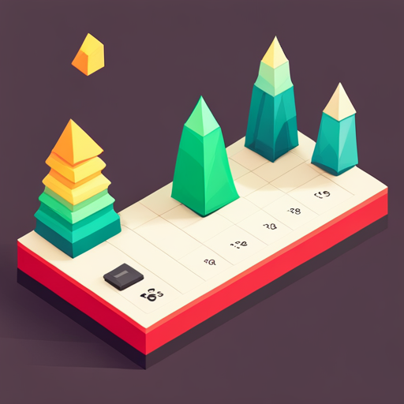

资产的种类和评分指标

资产种类丰富多样,从股票、债券到房产、收藏品应有尽有。但是对于个体创业者来说,并非任何资产都适合。评判一个资产是否适合,需要从复利性、红利性、投入产出比、维护成本、专长匹配度等多个维度进行评估。
以我自己为例,我曾经对美术收藏抱有浓厚的兴趣,买过不少中国当代艺术家的作品。这些作品属于有潜在升值空间的资产,具有红利性。但是它的复利性不高,我无法借助它实现自我复制。同时它的维护成本也不低,要定期请人修复,还要买保险。最后最关键的是,它并不匹配我的专长,我需要依靠拍卖行等中介机构才能变现,这也导致了我的投入产出比较低。所以后来我逐步把艺术收藏的资产变现,转而投资于有重复收益的资产。
对我来说更适合的资产是知识产权,比如我通过录制视频课程创造的版权。它具有很高的复利性,一旦录制完成,可以被无限次复制;同时也具备红利性,互联网上的内容需求日益增长。它的维护成本很低,基本上完成后就可以靠平台自主推广。最重要的是,它非常匹配我的专长,我可以利用写作、演讲、内容营销等已有技能进行变现,所以投入产出比很高。
具体来看,适合个人创业者的资产可以有以下几类:
- 知识产权
包括书籍、视频课程、专栏、APP等数字内容。适合有写作和内容创作专长的人。要点是原创性,防止侵权。可以考虑开源部分内容来获取关注度,然后销售付费版本。
- 在线服务
比如编程服务、设计服务、咨询服务等。适合有特长的个人,可以利用网络营销获取客户。优势是投入少,可以边做边学习。注意不要承诺超出自己能力范围的服务。
- 在线物品
如电子书、音频、视频、照片等数字商品。比服务型更易实现规模化。可以考虑用 AI 和流水线优化生产。需要注意创意要求较高,不能简单重复。
- 软件产品
如网站、App、SaaS 等。上面资产的进一步升级版本。需要技术能力,可以找合伙人。注意要有持续维护计划。
- 社群平台
利用不同社交软件吸引用户,然后变现。适合有强大个人魅力或深厚领域知识的人。要注意社群质量,防止变现难。
除了品类选择,我们还可以从以下几个维度评判一个资产的质量:
-
复利性:可以自我复制的能力。数字资产的复利性最高。
-
红利性:满足未满足的需求,获得红利。要定期关注需求变化。
-
投入产出比:投入时间与获得收入的比例。要追求最优的比例。
-
维护成本:保持资产运转的成本。数字资产的成本最低。
-
专长匹配:你的专长是否能有效运用这个资产。匹配度越高,效率越高。
-
变现难易:将资产变现为现金的难易程度。要选择你擅长的变现方式。
每种资产都有其优劣。关键是要选择最匹配自己的,这样投入产出比才能最大化。同时要注意组合投资,单一资产风险太大。只有通过实践,才能找到最适合自己的资产组合。期待这篇文章能给大家的资产选择带来一些参考。